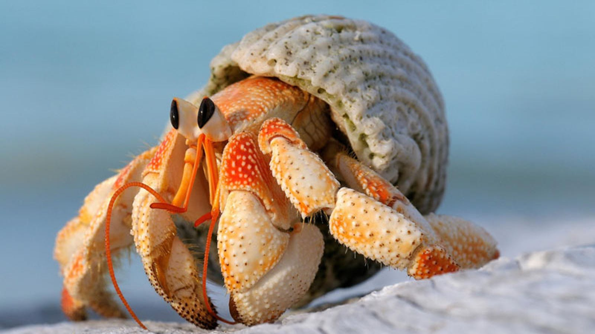

Рак-отшельник

Взрослый рак-отшельник всю жизнь проводит в пустой раковине брюхоногих моллюсков.
Увидев врага, рак-отшельник полностью скрывается в раковине и закрывает вход в нее своими клешнями.
- Класс - Ракообразные
- Подкласс - Высшие ракообразные
- Ряд - Десятиногие
- Род/Вид - Pagurus bernhardus
Основные данные
РАЗМЕРЫ
-
Длина: до 12 см; взрослый рак живет в пустой раковины моллюска, пряча в нее лишено панциря брюшко.
РАЗМНОЖЕНИЕ
- Половое созревание: с 18 месяцев.
- Период спаривания: в течение всего года.
- Количество яиц: до 15 000.
- Инкубационный период: 7-10 дней. Личинки линяют 4 раза.
ОБРАЗ ЖИЗНИ
- Привычки: одиночки, иногда несколько особей встречаются у источника пищи.
Молодые особи держатся возле берега.
- Еда: раки-отшельники практически всеядны.
РОДСТВЕННЫЕ ВИДЫ
-
сухопутным ракам принадлежит, например, пальмовый вор, что весит больше килограмма.
Раньше считали, что он может расколоть даже кокосовый орех.